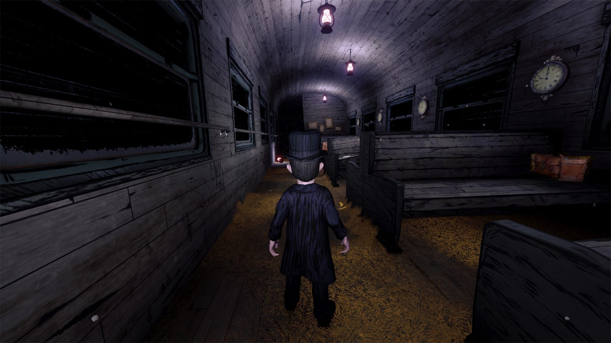
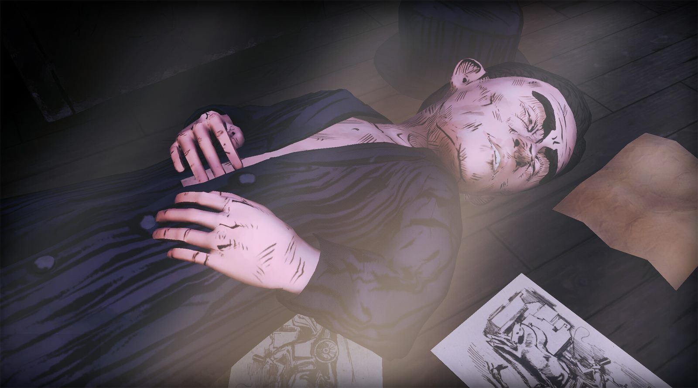
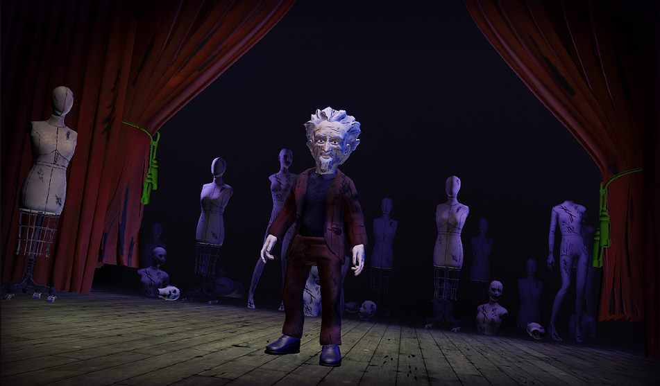
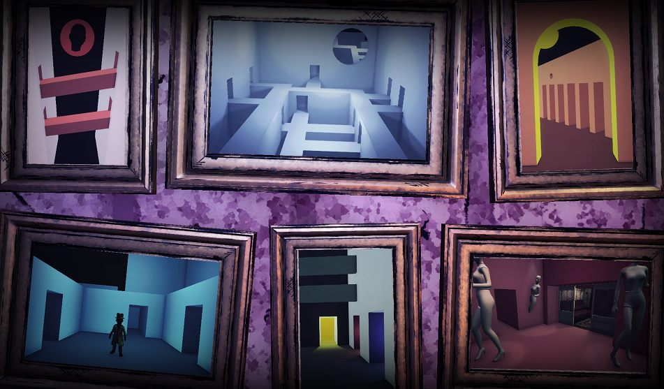

Hourglass Sanatorium
Przygodowy horror według Brunona Schulza: nieeuklidesowe labirynty, zagadki i podróż do alternatywnego świata. Architekturę gry napisałem od pierwszej linii kodu. Gra ma już stronę na Steam i czeka na premierę.
- Moja rola
- Architektura
- Zespół
- 6 osób
- Produkcja
- 1 rok
- Status
- Przed premierą

Moja rola
- Architektura od zeraStruktura projektu, systemy i przepływ danych, od pierwszej linii kodu po wersję gotową do premiery.
- Pomieszczenia nieeuklidesoweBezszwowe przenoszenie gracza razem z kamerą, z którego powstają niemożliwe labirynty.
- Zagadki i minigrySystem łamigłówek wpiętych w świat gry, a nie doklejonych obok.
- Systemy przygodowe i UIDziennik, ekwipunek, dialogi i napisy.
Wyzwanie: korytarz, który nie powinien istnieć
- Problem
- Labirynty miały się zapętlać i zmieniać za plecami gracza, a gracz nie mógł zauważyć żadnego przeskoku obrazu ani kamery.
- Rozwiązanie
- Bezszwowy teleport: gracz razem z kamerą zostaje przeniesiony do bliźniaczego korytarza, identycznego w miejscu przejścia. Za jego rogiem czeka już zupełnie inna przestrzeń, więc labirynt zmienia się, a gracz nie widzi momentu podmiany.
- Efekt
- Niemożliwe, zapętlone przestrzenie, które budują oniryczny klimat prozy Schulza, bez ekranów ładowania i widocznych cięć.
O projekcie
W grze słychać dwa rozpoznawalne głosy polskiego dubbingu: Tomasza Grochoczyńskiego (Ojciec; m.in. Arktos z "Tabalugi", Torbjörn z "Overwatch") i Jarosława Domina (Józef; m.in. Obi-Wan z "Gwiezdnych wojen", Pinokio ze "Shreka").



Stack
Czego się nauczyłem
Jak zaprojektować architekturę, która przetrwa cały cykl produkcji: od prototypu, przez zmiany designu, po wersję gotową do wydania. I jak dowieźć grę narracyjną w zespole, z dubbingiem i zewnętrznym finansowaniem.